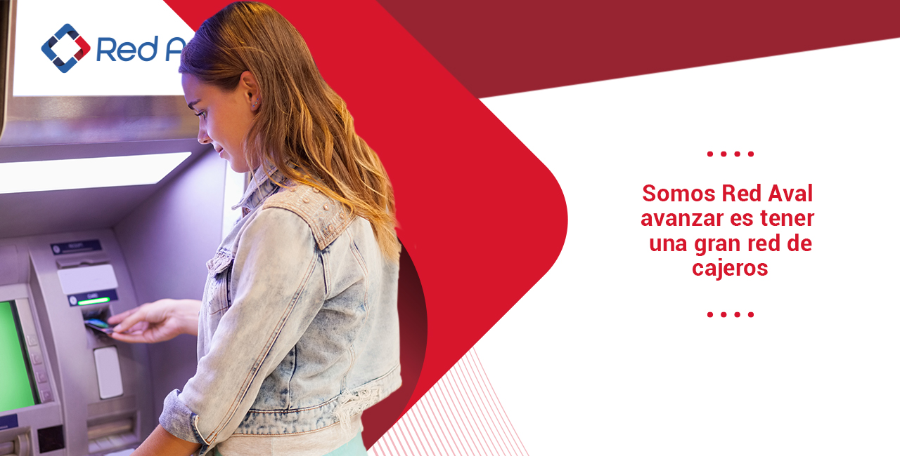

El Banco de Bogotá continúa consolidando su posición como uno de los principales referentes del sistema financiero colombiano y regional, tras recibir dos importantes reconocimientos internacionales en 2026. La entidad fue distinguida como el Mejor Banco de Colombia por la revista Global Finance y, además, en días pasados obtuvo el prestigioso iF Design Award por su sistema de diseño digital Sherpa. En la 33.ª edición de los World’s Best Bank Awards, Global Finance destacó al banco por su crecimiento sostenido, solidez financiera, innovación tecnológica y capacidad para responder a las necesidades de sus clientes en un entorno cada vez más digital.